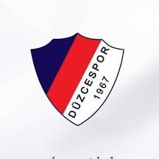

Şehrimizin Gururu: Düzcespor 💙❤️

Kuruluş: 1967
Renkler: Lacivert - Kırmızı
Tarihçemiz
Düzcespor, 1967 yılında Düzce'de kurulan köklü bir spor kulübüdür. Türk futbol tarihinde önemli bir yere sahip olan kulüp, yıllarca profesyonel liglerde mücadele etmiş ve şehrin en büyük birleştirici gücü olmuştur.
Özellikle kendi sahasında oynadığı maçlarda taraftarının oluşturduğu muhteşem atmosferle rakiplerine zor anlar yaşatan Düzcespor, "Kırmızı Şimşekler" lakabıyla anılmaktadır. Kulübün temel amacı, altyapıdan yetenekli gençleri Türk futboluna kazandırmak ve şehrini en iyi şekilde temsil etmektir.
Stadyum ve Taraftar
Maçlarını Düzce 18 Temmuz Stadyumu'nda (yeni adıyla Düzce Şehir Stadyumu) oynayan takımımızın en büyük itici gücü, vefakâr taraftarıdır. Yağmur çamur demeden takımını destekleyen taraftar grupları, tribün kültürünün en güzel örneklerini sergilemektedir.
| Özellik | Detay |
|---|---|
| Stadyum | Düzce Şehir Stadyumu |
| Kapasite | Yaklaşık 4.500 |
| Lakap | Kırmızı Şimşekler |